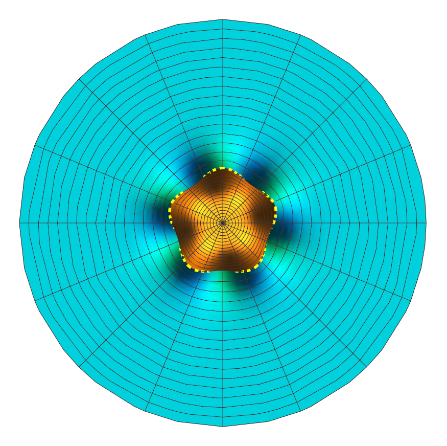
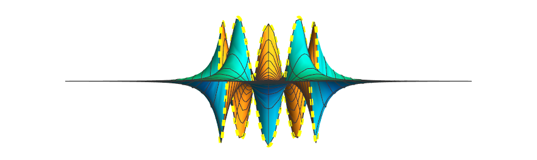
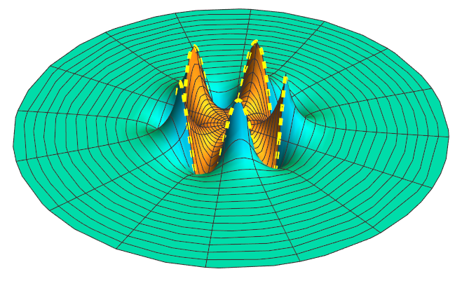

Charge density
\[\sigma (\phi )=a\sin \left( 5\phi \right) \](Where $a $ is constant) is glued over the surface of an infinite cylinder of radius $R $ (Fig. 3.25).
Find the potential inside and outside the cylinder.
(Hint: Use your result from problem 3.26).
Here's a representation of the potential (consider a cross section of the cylinder)
Let's recall the general solution to Laplace's equation in Cylindrical coordinates (with $z $-symmetry):
\[V(s,\phi )=a_0 +b_0 \ln s + \sum_{k=1}^{\infty } \bigg( s^k \left[ a_k \cos \left( k\phi \right) +b_k \sin \left( k\phi \right) \right] + s^{-k} \left[ c_k \cos \left( k\phi \right) +d_k\sin \left( k\phi \right) \right] \bigg) \]Let's see how we can start to clean up this expression:
Inside, we get rid of the $\ln s $ term and the terms with $s^{-k} $, as these will blow up as $s\rightarrow 0 $. At this point the general solution becomes
\[V_{\text{inside} }(s,\phi )=a_0 + \sum_{k=1}^{\infty } \bigg( s^k \left[ a_k \cos \left( k\phi \right) +b_k \sin \left( k\phi \right) \right] \bigg) \]Outside, we get rid of the $\ln s $ term and the terms with $s^{k} $, as these will blow up as $s\rightarrow \infty $. At this point the general solution becomes
\[V_{\text{outside} }(s,\phi )=a_0 + \sum_{k=1}^{\infty } \bigg( s^{-k} \left[ c_k \cos \left( k\phi \right) +d_k\sin \left( k\phi \right) \right] \bigg) \]Let's now recall section 2.3.5: Boundary Conditions, where we learned that the potential $V $ and surface charges are related by:
\[\frac{\partial V_{\text{above} }}{\partial n}-\frac{\partial V_{\text{below} }}{\partial n}=-\frac{1}{\epsilon _0 }\sigma \tag{2.36, page 88}\]It is clear that (where above is now outside and below is inside)
\begin{align*} \frac{\partial V_{\text{outside} }}{\partial s} &= \sum_{k=1}^{\infty } \bigg( -ks^{-k-1} \left[ c_k \cos \left( k\phi \right) +d_k\sin \left( k\phi \right) \right] \bigg) \\ \frac{\partial V_{\text{inside} }}{\partial s} &= \sum_{k=1}^{\infty } \bigg( ks^{k-1} \left[ a_k \cos \left( k\phi \right) +b_k \sin \left( k\phi \right) \right] \bigg) \end{align*}We know what $\sigma $ is (given by the problem), so:
\begin{align*} \sigma =a\sin \left( 5\phi \right) &= -\epsilon _0 \left( \sum_{k=1}^{\infty } ks^{k-1} \left[ a_k \cos \left( k\phi \right) +b_k \sin \left( k\phi \right) \right] -ks^{-k-1} \left[ c_k \cos \left( k\phi \right) +d_k\sin \left( k\phi \right) \right] \right) \Big|_{s=R} \\ &= -\epsilon _0 \left( \sum_{k=1}^{\infty } kR^{k-1} \left[ a_k \cos \left( k\phi \right) +b_k \sin \left( k\phi \right) \right] -kR^{-k-1} \left[ c_k \cos \left( k\phi \right) +d_k\sin \left( k\phi \right) \right] \right) \\ &= -\epsilon _0 \left( \sum_{k=1}^{\infty } kR^{k-1} \left[ a_k \cos \left( k\phi \right) +b_k \sin \left( k\phi \right) \right] -\frac{k}{R^{k+1}} \left[ c_k \cos \left( k\phi \right) +d_k\sin \left( k\phi \right) \right] \right) \end{align*}We have a sine on the left hand side, and a sum of different sines and cosines on the right hand side. It is clear that a lot of things will have to go away. We start by getting rid of all the cosines, so:
\begin{align*} a_k &= 0\;;\;\;\; \text{for all $k $} \\ c_k &= 0\;;\;\;\; \text{for all $k $} \end{align*}If we have a $\sin \left( 5\phi \right) $ cosine on the left hand side, then we only want that one to be on the right hand side. This means that
\begin{align*} b_k &= 0\;;\;\;\; \text{whenever $k\neq 5 $} \\ d_k &= 0\;;\;\;\; \text{whenever $k\neq 5 $} \end{align*}We are left with
\[a \sin \left( 5\phi \right) =\epsilon _0 \left( 5R^{5-1}b_5-\frac{5}{R^{5+1}}d_5 \right) \sin \left( 5\phi \right) \]So
\[a=5\epsilon _0 \left( R^4 b_5 +\frac{1}{R^6 }d_5 \right) \]So far we have
\begin{align*} V_{\text{inside} }(s,\phi ) &= a_0 +s^5 b_5 \sin \left( 5\phi \right) \\ V_{\text{outside} } &= a_0 +s^{-5}d_5 \sin \left( 5\phi \right) \end{align*}But we are not done yet. We need another equation to relate $b_5 $ and $d_5 $ to get explicit values for each. An additional relation between them comes from the fact that $V $ must be continuous where both parts meet ($s=R $), that is:
\[V_{\text{inside} }(R,\phi )=V_{\text{outside} }(R,\phi ) \]It is clear at this point that we can ignore $a_0 $ completely, and that
\[s^5 b_5 \sin \left( 5\phi \right) =s^{-5}d_5 \sin \left( 5\phi \right) \]So
\[d_5=R^{10}b_5 \]Using the relation between $a,d_5,b_5 $ ($a=5\epsilon _0 \left( R^4 b_5 +\frac{1}{R^6 }d_5 \right) $), we see that
\[b_5 =\frac{a}{10\epsilon _0 R^4 } \]And because $d_5=R^{10}b_5 $, we have that:
\[d_5=\frac{aR^6 }{10\epsilon _0 } \]We can now conclude with:
\begin{align*} V_{\text{inside} }(s,\phi ) &= s^5 \frac{a}{10\epsilon _0 R^4 } \sin \left( 5\phi \right) \\ V_{\text{outside} } &= s^{-5}\frac{aR^6 }{10\epsilon _0 } \sin \left( 5\phi \right) \end{align*}Here are some plots of the potential. A circle of radius $R $ is shown in dashed yellow. Notice how the inside solution (orange) joins the outside solution (cyan) continuously.
  